I started working with data during my undergraduate studies in Physics at UERJ, where I participated in an acoustics research project supported by FAPERJ. My work involved measuring sound levels and studying how material properties affect acoustic reflection. Working with logarithmic measurements such as decibels taught me an early lesson that continues to influence how I approach data: understanding what a measurement represents is as important as the calculation itself.
After graduating, I worked as a physics teacher. That experience helped me develop a skill that later became important in data science: communicating technical concepts clearly to people with different backgrounds and levels of technical knowledge.
I continued my academic training at CBPF, completing a master's degree as a CAPES scholar and a PhD supported by a FAPERJ Nota 10 scholarship. During my doctorate, I also spent a period at the University of Warwick in the United Kingdom as a visiting researcher. I completed my PhD in 2023, receiving an honorable mention for the thesis. My research background gave me a strong foundation in experimental analysis, statistics, signal interpretation, and distinguishing meaningful effects from noise.
I later moved into industry, applying these skills to practical problems. At BINAHKI, I worked on machine learning solutions for industrial clients, including models deployed on AWS using electrical sensor data from equipment such as furnaces and compressors. In one project, the analysis also helped identify a methodological issue in an existing process that was contributing to unnecessary energy consumption.
At ESPM, where I currently work, I have been helping structure data and analytics capabilities within an area that previously relied heavily on spreadsheets and manual processes. My work includes data pipelines, machine learning, business intelligence, and the development of internal generative AI solutions. I also work on evaluation frameworks to assess model quality, cost, and operational viability before deployment.
What I work with
Machine learning in production: forecasting, anomaly detection, classification, deployment, and monitoring
Time series and signal analysis: pattern recognition, noisy data, weak signals, and condition monitoring
Generative AI and LLM systems: RAG, agentic workflows, evaluation pipelines, and quality measurement
Data products and decision support: KPI frameworks, dashboards, data pipelines, and translating analytical results into practical decisions
I am particularly interested in problems where data, statistical reasoning, and engineering need to work together. I enjoy building solutions that are technically sound, understandable to stakeholders, and useful in real-world decision-making.
Academic Profile
Research in Condensed Matter Physics and Materials Science
Research Focus
During my doctoral program, I focused my studies on the physical properties of transition metal oxides, with a special emphasis on the investigation of double perovskite-type structures and their impact on the "exchange bias" phenomenon.
My research covers a variety of techniques:
Magnetic measurements
Electrical and thermal transport studies
X-ray diffraction
Magnetoresistance analysis
Investigation of strong electronic correlation phenomena
Materials Synthesis Experience
Extensive experience in materials synthesis through various methods:
Sol-gel synthesis
Co-precipitation methods
Solid-state synthesis
Floating zone techniques
All syntheses included both polycrystals and single crystals of ternary and quaternary rare earth oxides, as well as binary single crystals such as V₂O₅.
Characterization Techniques
X-ray photoelectron spectroscopy (XPS)
Raman spectroscopy
Atomic force microscopy (AFM)
Early Research
Musical Acoustics and Environmental Acoustics
Applications of electromagnetic waves in magnetic resonance
My journey has been shaped by the development and application of statistical models, with a strong focus on identifying patterns, understanding trends, and generating actionable insights.
I developed a strong foundation in scientific problem-solving, quantitative modeling, and rigorous analytical reasoning through end-to-end research projects. This experience includes hypothesis formulation, experimental planning, data acquisition, and the interpretation of complex multivariate phenomena. With this background, I present below a detailed overview of my professional trajectory from a technical perspective.
Technical Skills
Programming & Data Manipulation
Python (Pandas, Polars, NumPy)
SQL for querying, transformation, and data management
PySpark and Databricks for large-scale distributed processing
Data Visualization & Statistical Analysis
Matplotlib, Seaborn, Plotly
SciPy and Statsmodels for statistical modeling and inference
Machine Learning & AI
TensorFlow, Keras, Scikit-learn, XGBoost
Prophet and Darts for forecasting and time series modeling
Cloud & Ops
Docker for containerization and portability
AWS, Azure and Google Cloud for scalable cloud architectures
ESPM (Superior School of Advertising and Marketing)
Data Scientist | Aug 2024 - Present
At ESPM, I work on restructuring the data lifecycle across extraction, loading, and transformation workflows, while also designing and maintaining a set of academic quality indicators that support strategic decision-making and pedagogical evaluation.
A major part of my role involves developing and structuring KPIs related to student attraction, retention, progression, and academic performance over time. These indicators allow us to monitor academic outcomes across different admission channels and understand how student performance evolves throughout the program.
In parallel, I help develop analytical products that support the segmentation and classification of newly admitted students, enabling early identification of those who may require academic reinforcement based on previously defined metrics and performance indicators.
Beyond the technical implementation, I actively contribute to the conceptual design of the metrics and frameworks used to map the full academic ecosystem. This includes translating educational goals into measurable indicators, validating assumptions with data, and communicating results to stakeholders.
I also work on complementary solutions such as dashboards that integrate machine learning outputs with academic metadata, as well as automation tools for academic operations. One example is the development of an internal exam-generation platform, which improves efficiency, reduces operational cost, and strengthens the data foundation required to support the KPIs built for institutional monitoring.
Predictive Analytics: KPI dashboards for approval rates, retention, and academic completion
Applied Research: ML/AI approaches applied to interdisciplinary academic datasets
Data Products: Analytics solutions supporting academic management and learning strategies
Process Optimization: Resource allocation analysis and operational efficiency improvements
At BINAHKI, I worked on smart monitoring products for multinational clients such as ZF Friedrichshafen, using IoT sensor data to monitor industrial machines and optimize production processes.
The main project involved monitoring industrial furnaces used in steel production through electrical voltage signals. The sensor data was stored in a cloud-based SQL environment integrated with AWS S3, and the pipeline included data ingestion, processing, and model-based detection of operational cycles.
Using Python and TensorFlow, I trained time series models to learn normal behavior patterns and identify key events such as the start and end of each production batch. Based on this cycle-level detection, I built statistical energy-consumption parameters that enabled forecasting of monthly usage and measurement of production efficiency.
In addition to furnace monitoring, similar IoT solutions were deployed to other industrial machines with the same objective: anomaly detection for predictive maintenance. These models supported early identification of abnormal behavior in equipment involving pumps, torque systems, and mechanical load.
Beyond product development, I also contributed to the design and architecture of data science solutions for public innovation calls. These initiatives resulted in successful proposals, including a project for a sanitation company focused on correcting missing and anomalous records using multivariate time series methods and statistical models such as ARIMAX.
My Master's research focused on combining systematic investigation with advanced laboratory methodology and quantitative interpretation of experimental results. This experience strengthened my ability to convert complex measurements into reliable scientific conclusions.
During my PhD, I conducted a systematic optimization study of physical properties under controlled experimental conditions. I compared the same material across multiple processing configurations and extracted insights from structural, microstructural, electronic, and magnetic datasets. This work required high analytical rigor, reproducibility, and careful interpretation of nonlinear behavior, reinforcing my ability to investigate complex systems and identify causal relationships in data.
This research path strengthened key Data Science capabilities such as experimental design thinking, statistical reasoning, pattern recognition, critical validation, and technical communication. Most importantly, it reinforced the ability to structure findings into clear narratives supported by evidence and consistent methodology.
Publications
2025
Enhanced oxygen mobility in NiAg alloy catalysts for methane dry reforming
ARG Caranton, AVP Lino, C Macchiutti, NRC Huaman, E Annese
What is the smallest fleet that meets a waiting-time target on a real street network, and how much does driver behavior change it?
Context
Fleet size is usually a spreadsheet estimate: trips times minutes, plus a guessed margin that ignores where the cars are when a request arrives.
Action
Built a discrete-event simulator on OpenStreetMap networks that searches for the minimum fleet with confidence intervals, compares driver behaviors in paired A/B tests and is checked against queueing theory.
Result
A minimum fleet with a confidence interval and one finding: informing drivers shrinks the fleet, coordinating them barely does. Validation against real Manhattan trips does not pass yet, and the dashboard says so.
A discrete-event simulator that finds the smallest fleet meeting a service target on real street networks, with a confidence interval on every answer and validation against queueing theory and 5.3 million real trips
Figures & Results
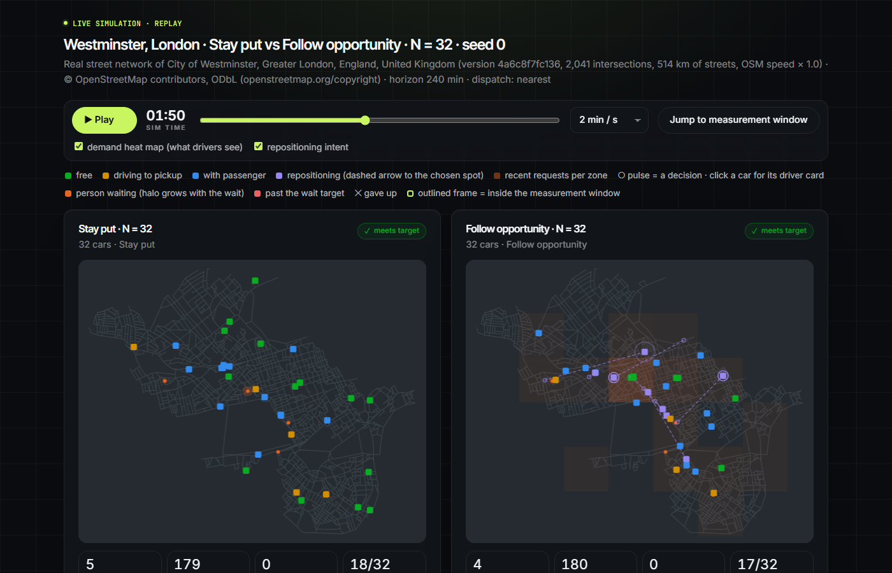
Live replay: same requests, two behaviors
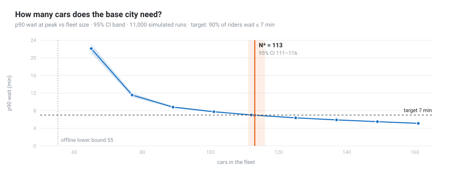
N* = 113, 95% CI 111–116
Information pays; coordination barely does
Project Overview
“How many cars does this city need?” is usually answered with trips per hour times minutes per trip, plus a guessed margin. UrbanSim simulates the fleet minute by minute on OpenStreetMap streets (Cachoeirinha, Westminster, Manhattan) and searches for N*, the smallest fleet whose upper confidence bound meets the target: 90% of riders wait at most 7 minutes and at most 5% give up.
The Central Design Decision
A simulation always produces a number; the work is in knowing how much to trust it. Every N* carries a bootstrap confidence interval. Every comparison is a paired A/B test on common random numbers, with a minimum effect registered before the run and shuffled controls. And the model must reproduce closed-form queueing results before it is trusted on a city.
Results & Impact
N* = 113 cars (95% CI 111–116) on the base city, from 11,000 runs, against an offline floor of 55.
Information pays more than control: drivers who weigh demand against free cars need 79 cars, against 111 when they stay put. A central platform needs 80, so the price of anarchy is about 1.
6 of 6 theory checks pass: Erlang C, Little’s law, the square-root law of search, and market equilibrium.
Manhattan does not validate yet, and the project says so. Little’s law holds within 2% against TLC data, but zone ranking, the wait distribution and travel times fail. The diagnosis sets the next round.
A retrieval-augmented agent built for regulated use: it refuses without evidence, never answers outside a user's scope, and writes every decision to an audit trail
Figures & Results
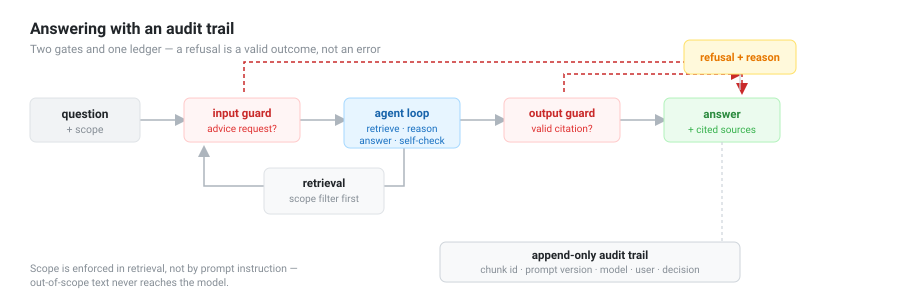
Two gates and one ledger
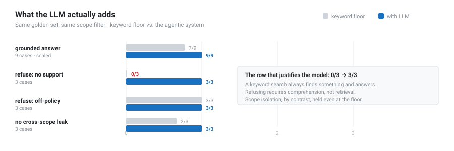
18/18, zero scope leaks
Project Overview
Most RAG demos answer well and stop there. In a bank or an asset manager, answering well is table stakes - the questions that decide deployment are different: did it refuse when it had no evidence? could it leak one client's data into another's answer? can you reconstruct, months later, why it said what it said? This pipeline is built around those three.
The Central Design Decision
The model explains; it never computes and never decides. Every figure must appear literally in a retrieved passage, and every claim carries its source. Swap the model and the numbers do not move - only the wording. Scope works the same way: permissions become a metadata filter applied during retrieval, so out-of-scope text never reaches the model. Restricting by prompt is a request, not access control.
Main Products / Deliverables
Agentic RAG pipeline - retrieve → reason → answer → self-check, structured output, hard budget of two LLM calls per question.
Guardrails with four refusal decisions - off-policy request, no evidence, no citation, fabricated citation. Off-policy is caught before any LLM call is spent.
Append-only audit trail - passage IDs, prompt version, model, user, decision. Stores the hash of each passage, never the text.
Two-layer eval harness - deterministic oracles first, LLM judge only on what was answered.
Results & Impact
Against a keyword floor using the same scope filter, the system scored 18/18 with zero scope leaks. The row that justifies the model is refusal for lack of evidence, 0/3 → 3/3: a search always finds something and answers - refusing requires comprehension, not retrieval. Scope isolation, by contrast, held even at the floor, because the restriction is structural. Judge metrics over the 10 answered items: faithfulness 1.000, answer relevancy 1.000, context precision 0.243 - the last reported rather than hidden, since it measures retrieval noise on a deliberately small corpus.
A compact Brazilian-Portuguese HTR model trained from scratch, evaluated against alternative architectures, and integrated as a pluggable reader in an end-to-end document-RAG pipeline
Figures & Results
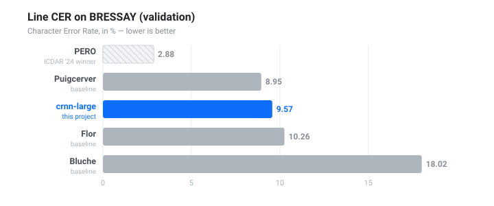
Benchmark: 9.57% CER
Architecture
Progression
Project Overview
The core system is an agent that structures PDFs for retrieval-augmented generation. Printed-text OCR handles typed pages, but handwriting it cannot - and no public HTR model exists for Brazilian Portuguese. So I built the handwriting reader from scratch and plugged it in behind the same interface as the existing OCR, selectable at runtime. Nothing downstream needs to know whether a page was typed or handwritten.
Main Products / Deliverables
pt-BR HTR model - a versioned artifact (weights + alphabet, sha256), 4.3M params, 17 MB; CPU-friendly inference, no GPU required to serve.
Pluggable reading backend - a drop-in OCR/HTR reader behind available() + ocr_blocks(), swappable with Tesseract without touching the pipeline.
Document-to-answer pipeline - PDF structuring, vector retrieval, and an agentic RAG loop that turns scanned documents into cited answers.
Reproducible bakeoff harness - the evaluation and promotion-gate system that picks models by metric, plus a parametrized Colab notebook for managed GPU training.
Key Questions Answered
Can a competitive Portuguese handwriting reader be trained with no pre-existing model and no local GPU?
Which architecture actually wins - decided by a metric on the official split, not by intuition?
How does a research model become a swappable component of a cloud pipeline?
Methodology - how the 9.57% was reached
The number is the output of a disciplined, reproducible procedure. The metric was written before the models: CER is aggregated across the corpus (edits and lengths summed before dividing, as in the ICDAR 2024 evaluation) so the result is directly comparable to published work.
Fixed the ground rules. Official BRESSAY splits (19,565 train / 4,609 validation lines), never a custom partition. The alphabet (96 classes) is built from the training split only and travels with the checkpoint.
Framed a bakeoff with a promotion gate. A challenger only replaces the baseline if it beats its validation CER. Baseline: CRNN + CTC (no autoregressive decoder, so it cannot hallucinate). Challenger: a fine-tuned TrOCR.
Trained with stable, cheap choices. Adam, ReduceLROnPlateau on validation CER, gradient clipping, and the checkpoint saved is the best epoch, not the last; resumes are anchored so a noisy epoch never overwrites a good checkpoint.
Read the curve, not the folklore. The epoch 8 - 10 oscillation was not overfitting but a learning rate too high - cutting it 1e-3→5e-4 moved crnn-small's 15.40% down to crnn-large's 9.57%.
Evaluated at three levels. Line CER guides training, the segmenter count is checked against ground truth, and page-level CER is measured end-to-end.
How the Technologies Were Used
PyTorch - the CRNN reader (CNN → bidirectional LSTM) and a custom training loop with best-checkpoint saving, LR scheduling, and anchored resume.
CTC loss - alignment-free line recognition with greedy decoding; the reason the baseline is trustworthy.
Hugging Face Transformers / TrOCR - the challenger, fine-tuned with AMP/fp16, LR warmup + cosine decay, and gradient accumulation on GPU.
PyMuPDF & Tesseract - PDF structuring and the printed-text OCR backend, behind the same contract as the HTR reader.
Qdrant + FastAPI + Claude - vector retrieval, service layer, and an agentic RAG loop that cites its source.
pytest & Colab - 105+ tests (hermetic and smoke) and a parametrized notebook for managed GPU training.
git clone https://github.com/Calazansmacchiutti/Stratifile-Agent-PDF.git
cd Stratifile-Agent-PDF
pip install -e .
python scripts/train_trocr.py --smoke # validate the pipeline on CPU
python scripts/train_bressay_local.py --model crnn-large --epochs 12
python scripts/train_trocr.py --epochs 8 --batch 8 # TrOCR challenger (GPU)
Results & Impact
A Brazilian-Portuguese handwriting reader that stands among published academic baselines despite CPU-only training (9.57% line CER, beating Flor and Bluche), delivered as a 17 MB versioned artifact ready to ship as a small containerized service. Because every stage is isolated by contract, the recognizer can be swapped - the moment the TrOCR challenger clears the gate - without touching the rest of the pipeline.
Exploratory and predictive analytics for operational efficiency in logistic networks
Screenshots
Departure Delays
Seasonality
Model Insights
Project Overview
This project consolidates exploratory analysis, KPI monitoring, and predictive modeling for a logistic operation handling thousands of daily deliveries. The objective is to surface actionable insights for dispatch planning, identify systemic bottlenecks, and forecast risk factors that affect service-level agreements.
Key Questions Answered
What routes, hubs, and shifts are the main contributors to departure delays?
How do seasonal patterns and workload peaks affect fleet punctuality?
Which operational variables most influence delay risk according to the predictive models?
Analytical Highlights
Interactive dashboards covering delay distribution, seasonal effects, and operational KPIs
Machine learning pipeline (gradient boosting and logistic regression) for delay risk scoring
Explainability layer with feature importance, SHAP interpretation, and scenario simulation
Automated data quality checks and anomaly alerts for incoming logistic batches
Workflow
Data ingestion from transactional systems and IoT telemetry with validation routines
The combined analytical assets contributed to a measurable reduction in average departure delays during pilot operations, while the predictive service surfaced upcoming high-risk routes for review. Operational teams now rely on the dashboards to reallocate resources earlier and plan contingencies for peak seasons.
Monitoring system for water treatment plants: forecasting, five anomaly-detection methods, alerting and reports
Screenshots
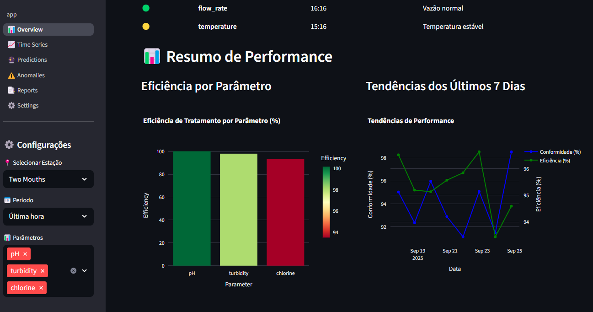
Main Dashboard
Analytics View
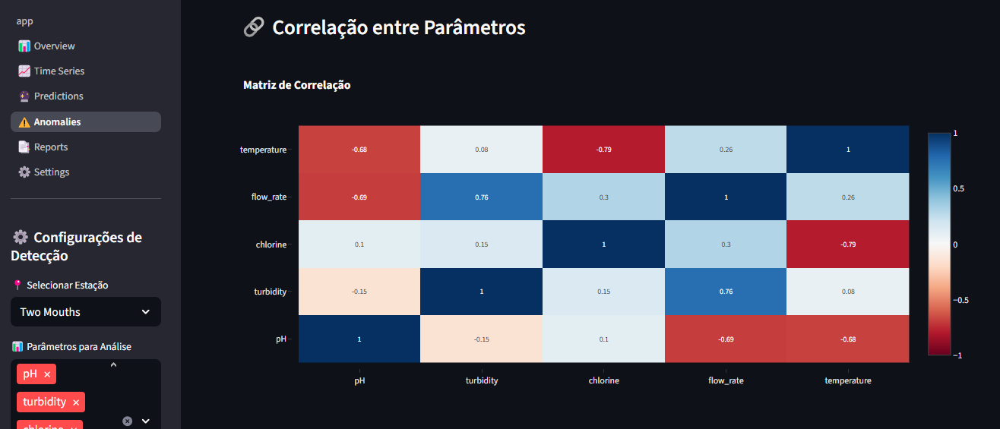
Visualizations
Project Overview
Real-time monitoring for three water treatment plants, each with its own sensor set. Around 7,900 lines across modules and dashboard pages: forecasting with Random Forest, XGBoost, Prophet and ARIMA; anomaly detection by five independent methods; alerting over email, Slack and Teams; automatic PDF, Excel and HTML reports; plus audit and backup. The dashboard runs on synthetic data generated for demonstration; a separate repository holds real SCADA data from the same utility.
Features
Interactive data visualization dashboards
Machine learning model demonstrations
Real-time data analysis tools
User-friendly web interfaces
Responsive design for various screen sizes
Applications Included
Data Visualization Dashboard
Interactive charts and graphs for exploring datasets with various filtering and customization options.
Machine Learning Playground
Hands-on interface for testing different ML algorithms and visualizing their performance.
Statistical Analysis Tool
Comprehensive statistical analysis with automated report generation and visualization.
Technologies
PythonStreamlitPandasPlotlyNumPyScikit-learn
Getting Started
git clone https://github.com/Calazansmacchiutti/StreamlitApp.git
cd StreamlitApp
pip install -r requirements.txt
streamlit run app.py
LSTM neural network for voltage time series prediction and analysis
Screenshots
LSTM Model
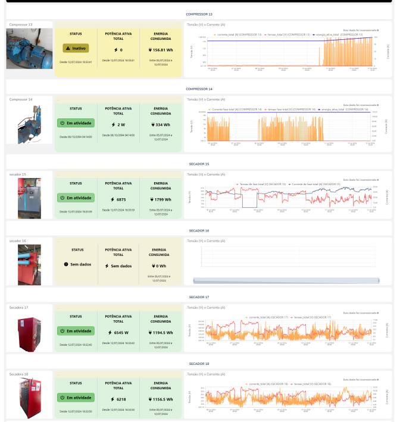
Predictions
Training
Project Overview
This project implements a Long Short-Term Memory (LSTM) neural network for voltage time series prediction and analysis. The model is designed to forecast voltage patterns and detect anomalies in electrical systems using advanced deep learning techniques.
Features
LSTM neural network architecture for time series forecasting
Voltage pattern recognition and prediction
Real-time anomaly detection capabilities
Interactive data visualization and analysis tools
Model performance evaluation and metrics
Scalable architecture for different time series lengths
Key Components
Data Preprocessing
Comprehensive data cleaning, normalization, and feature engineering for voltage time series data.
LSTM Model Architecture
Multi-layer LSTM network with dropout regularization and optimized hyperparameters for voltage prediction.
Prediction Analysis
Advanced forecasting capabilities with confidence intervals and performance metrics evaluation.
Visualization Dashboard
Interactive plots showing original vs predicted values, loss curves, and model performance metrics.
Technical Details
Model Architecture
Multi-layer LSTM with configurable hidden units
Dropout layers for regularization
Dense output layer for regression
Adam optimizer with adaptive learning rate
Data Processing
Time series windowing for sequence generation
Min-Max normalization for stable training
Train/validation/test split with temporal ordering
Data Science approaches for detecting fraudulent transactions using supervised and unsupervised learning
Screenshots
📄 Research Paper (click to download)
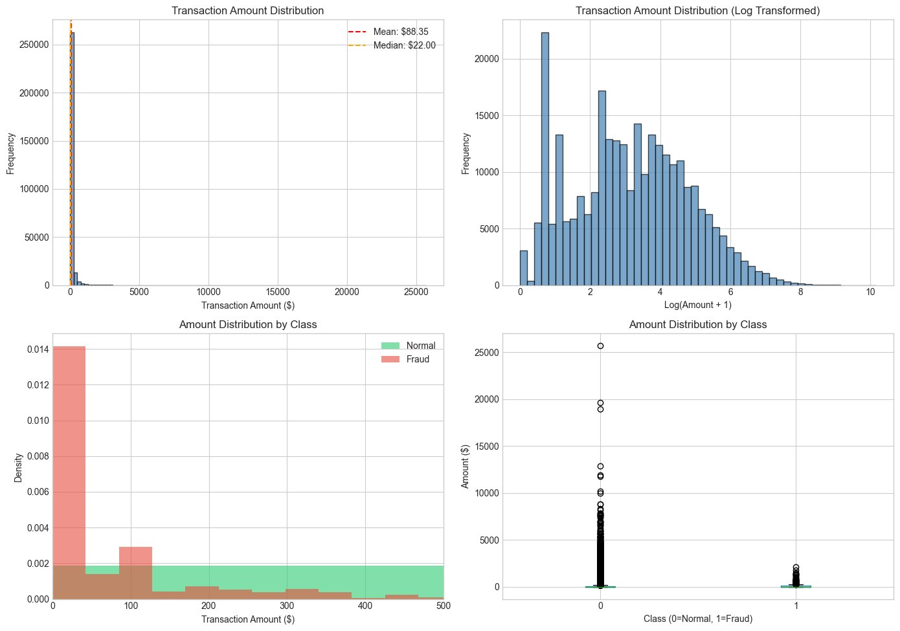
PCA Features
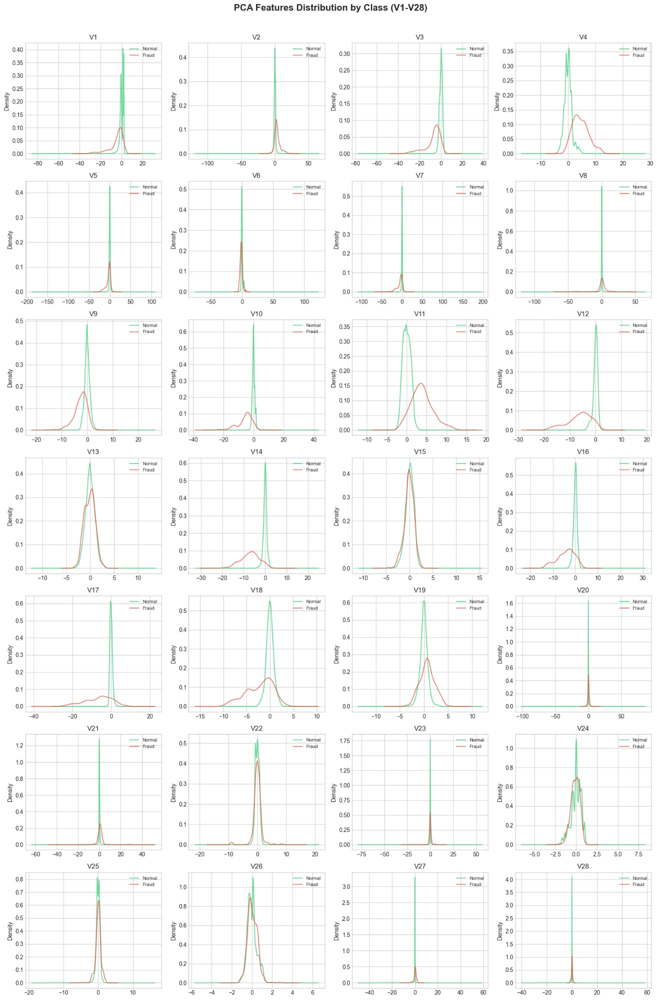
Model Comparison
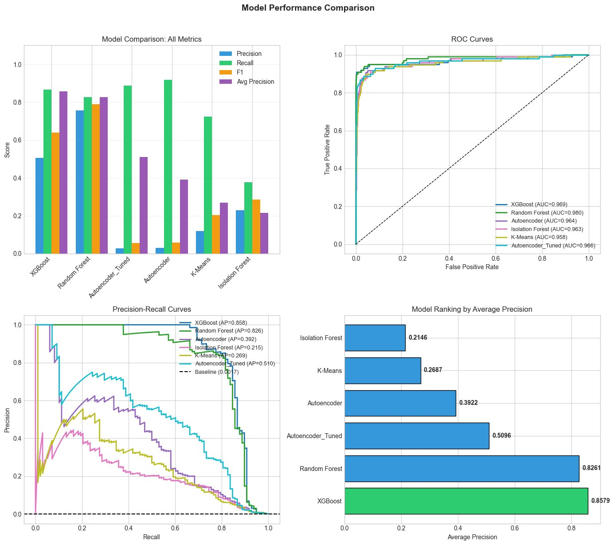
Amount Analysis
Project Overview
This project implements a comprehensive fraud detection system combining Know Your Customer (KYC) and Know Your Transaction (KYT) methodologies. Using the Credit Card Fraud Detection dataset, the system evaluates multiple machine learning approaches including supervised classifiers, unsupervised anomaly detection, and deep learning autoencoders to identify fraudulent transactions in highly imbalanced datasets.
Key Questions Answered
How do supervised models (XGBoost, Random Forest) compare against unsupervised approaches?
Which PCA-transformed features show the strongest discriminative power?
What is the optimal threshold strategy for extreme class imbalance (~0.17% fraud rate)?
How can autoencoder reconstruction error be leveraged for anomaly detection?
Analytical Highlights
XGBoost achieved highest Average Precision (0.858) followed by Random Forest (0.826)
ROC-AUC scores above 0.96 for all models, with XGBoost reaching 0.969
Autoencoder-based anomaly detection with tuned threshold achieving AP of 0.510
Feature importance analysis revealing V14, V4, V12, V10 as top discriminators
Supervised learning significantly outperforms unsupervised methods when labeled data is available. XGBoost emerged as the best performer with 85.8% Average Precision, detecting 86% of fraudulent transactions while maintaining 51% precision. The autoencoder approach provides a viable alternative for cold-start scenarios when labeled fraud examples are scarce.
Aug 2024 - Present
Building the data and analytics capability in an area that ran on spreadsheets: data pipelines, predictive modeling, KPI frameworks and dashboards. Design and operation of an internal generative AI platform (RAG, agentic workflow, human review), with evaluation of quality and cost before deployment.
Senior Data Scientist - BINAHKI
Sep 2023 - Aug 2024
Machine learning in production on AWS (SageMaker, S3, EC2) for industrial clients: anomaly detection on compressors and condensers, LSTM models over non-invasive electrical sensor data, and energy consumption forecasting with ARIMAX.
Researcher (Ph.D.) - CBPF
Nov 2017 - Jan 2024
Experimental research and statistical modeling of large, noisy datasets, with publications in high-impact journals.
Education
Ph.D. in Physics
CBPF | 2020-2024
Honorable mention for best thesis (2023). FAPERJ Nota 10 scholarship. Visiting researcher at the University of Warwick, United Kingdom.
M.Sc. in Physics
CBPF | 2018-2020
CAPES scholar.
B.Sc. in Physics
UERJ | 2012-2017
Acoustics research project supported by FAPERJ.